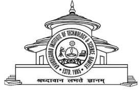

Kavikulguru Institute of Technology and Science, Ramtek
(UGC Autonomous)
This website has been developed under the
guidance of Architect Anjali Narad Mam
and with the support of our College.
Website Developed By:
- 👨💻 Nisarg Misar (Roll No: CT24005)
- 👨💻 Ujwal Thakre (Roll No: CT24075)
- 👨💻 Aditya Nagpure (Roll No: CT24077)
🚀 Enter Website